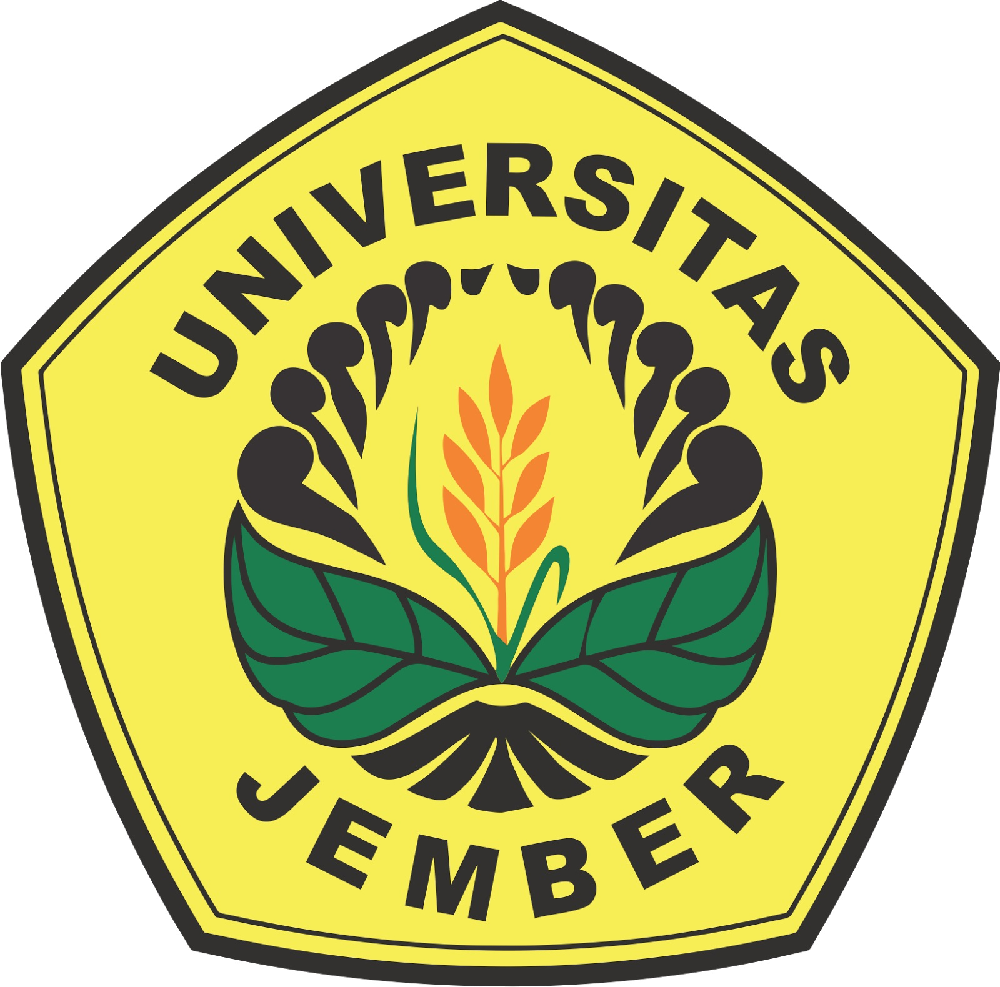

Welcome To Fakultas Ilmu Komputer
Fakultas Ilmu Komputer Universitas Jember yang diajukan dirancang dengan visi "Unggul dalam pengembangan ilmu komputer untuk menunjang pertanian industrial pada tahun 2035". Untuk mewujudkan visi tersebut, sudah dipersiapkan struktur kelembagaan, profile mahasiswa dan lulusan, perencanaan penambahan dan pengembangan SDM baik dosen maupun tenaga kependidikan, sarana dan prasarana, road map penelitian dan pengabdian kepada masyarakat dan kurikulum untuk masing-masing prodi sudah dipersiapkan dengan learning outcomes yang sudah ditentukan.
Terdapat 3 program studi yang ada pada Fakultas Ilmu Komputer, yaitu Sistem Informasi, Teknologi Informasi, dan Informatika. Ketiga prodi tersebut memiliki visi misi masing-masing. Yang nantinya akan dicapai bersama-sama dengan cara dan teknis yang berbeda-beda.
Fakultas Ilmu Komputer ini juga memiliki banyak Ormawa diantara lain, BPM, BEM, HIMASIF, ETALASE, MACO, BALWANA, LAOS, dan BINARY. semua ormawa terebut dinaungi oleh Fakultas Ilmu Komputer itu sendiri dan bergerak dibidangnya masing-masing.
---------------
dekan.ilkom@unej.ac.id